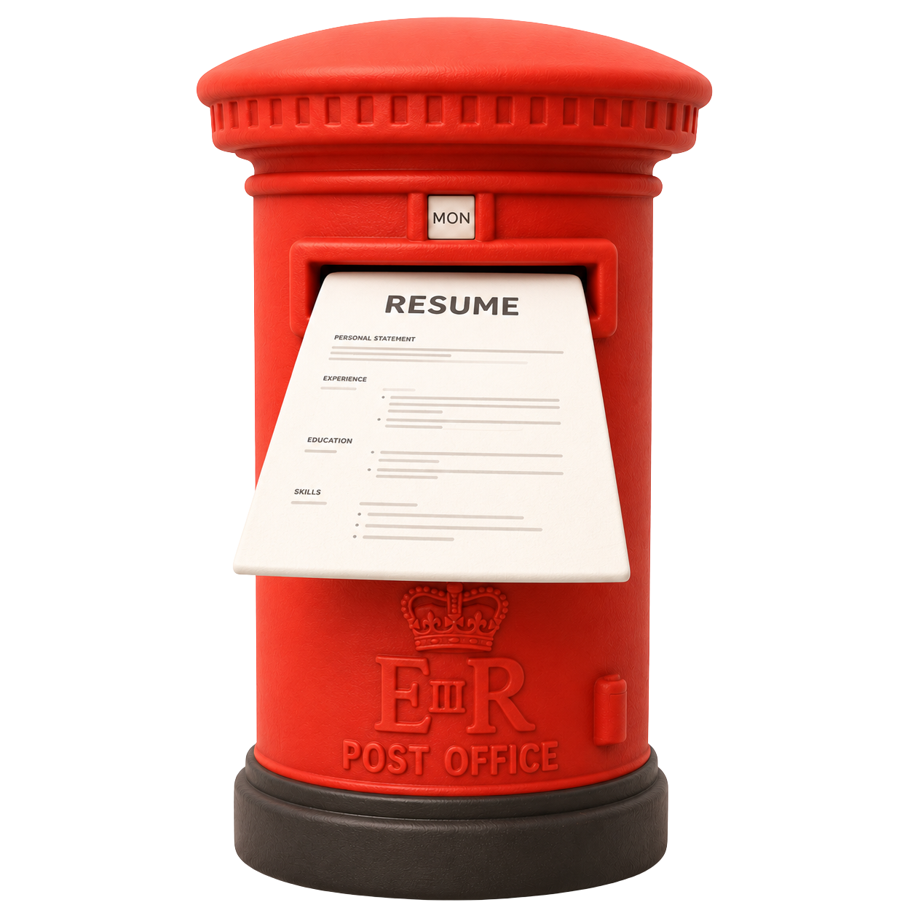
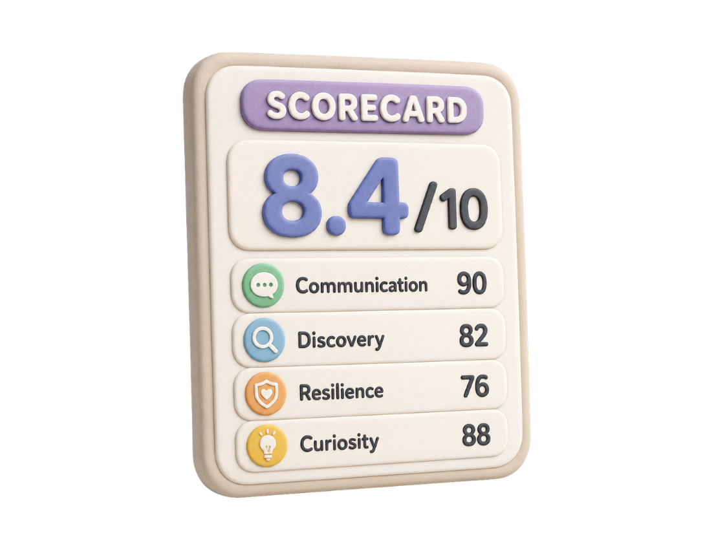

Assumerai
Candidate launch
Candidate launch
Stop repeating yourself.
One CV. One interview.
Portable hiring signal
One reusable profile
Do the work once.
CV intake. Adaptive interview. One scorecard.


Matches with context
Get matched to companies that fit.
Role context, fit scores, and a real reason every time.
Role fit
Mapped to the work, not keyword noise.
Company signal
Know why the match makes sense.
Next step
Move with clarity and less repetition.
Assumerai
Take the interview once.
Take the interview